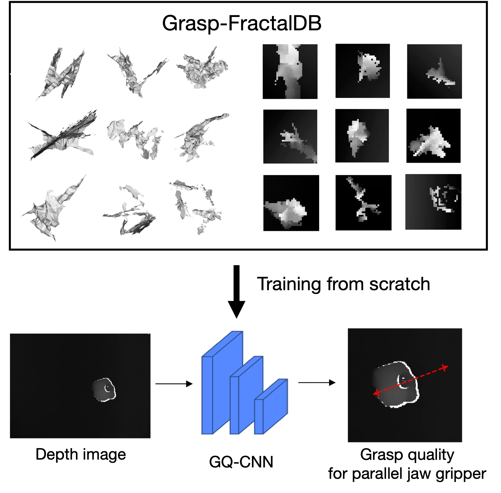
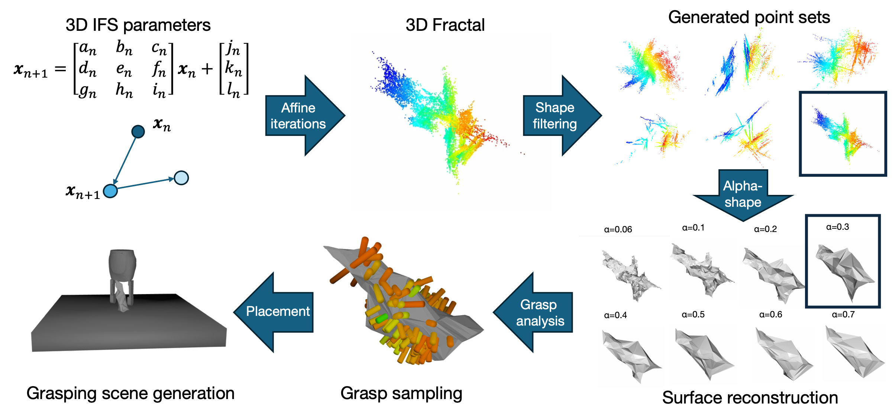
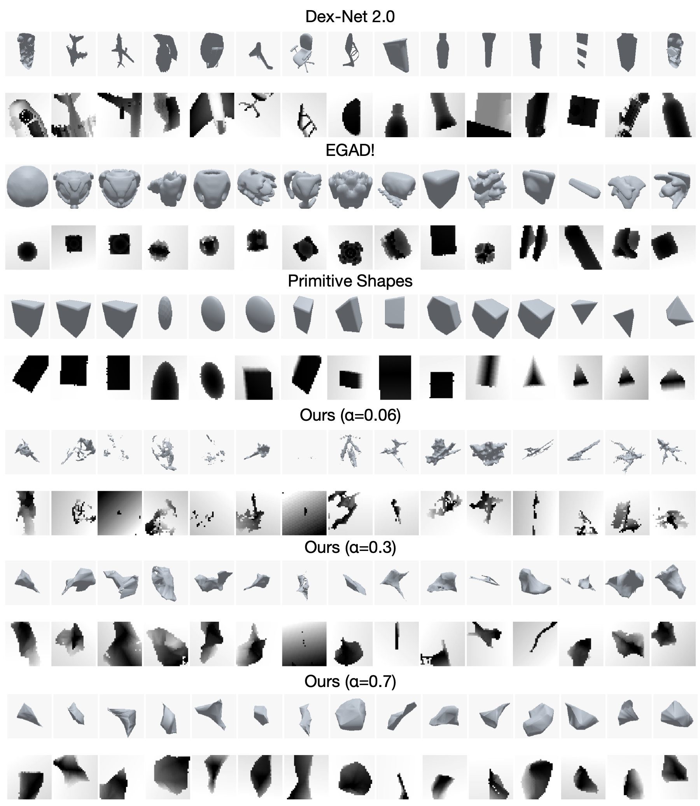
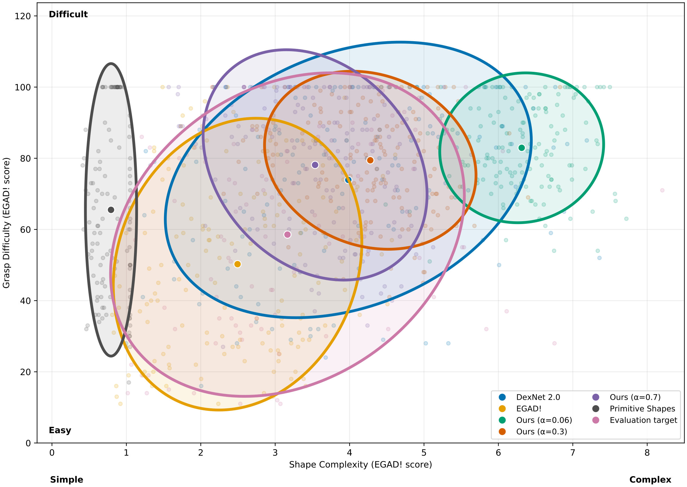
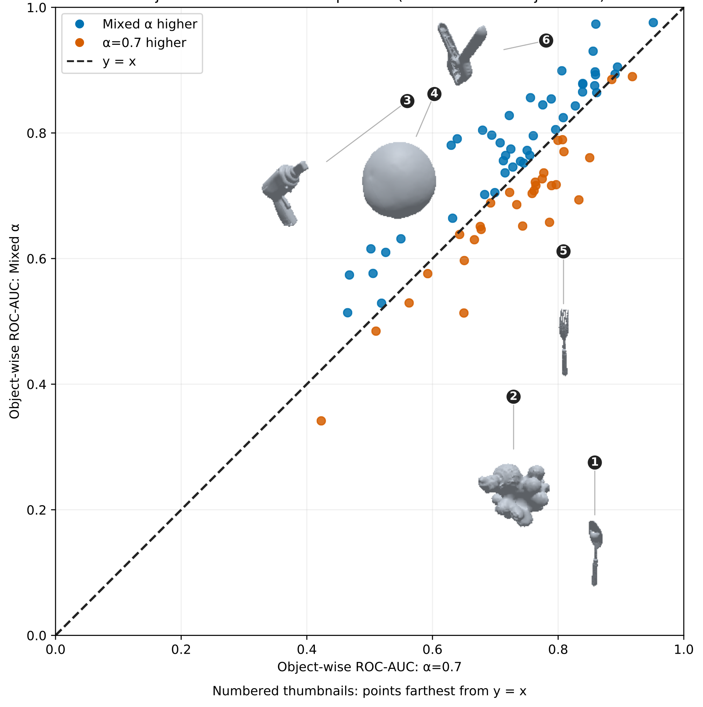
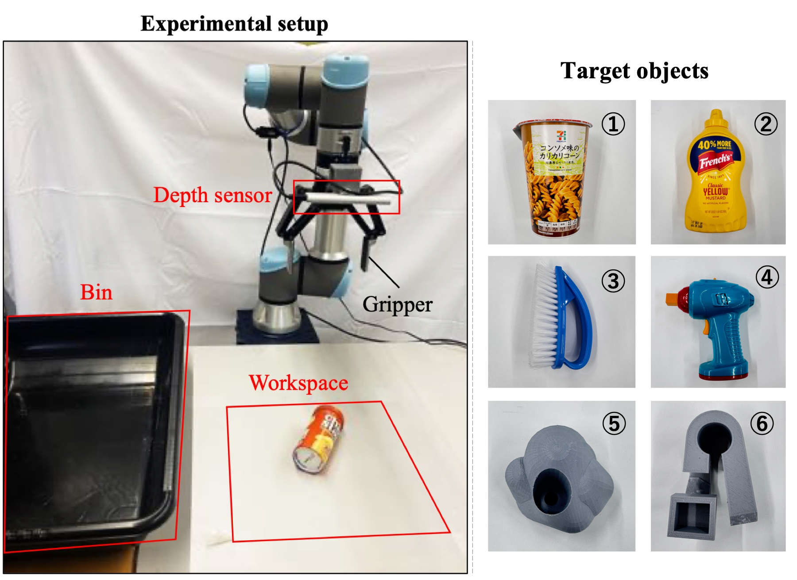

Scan-free generation
Creates 3D training meshes from a fractal formula without scanned or manually modeled object assets.
Anonymous project page · ICRA 2027 submission
Formula-Generated 3D Meshes for Grasp Quality Prediction
A scan-free pipeline that turns parameterized fractal point sets into closed 3D meshes, depth observations, and analytic grasp-quality labels following the Dex-Net 2.0 pipeline.
Author and affiliation information is intentionally withheld for double-blind review.

Overview
The geometric distribution of training objects can strongly affect how grasp-quality predictors generalize to unseen objects. Existing simulation pipelines commonly depend on scanned or manually designed 3D assets, while the amount and type of geometric variation needed for effective learning remain unclear.
Grasp-FractalDB generates category-independent objects from a parameterized 3D Iterated Function System. The resulting point sets are filtered, reconstructed as closed meshes with alpha shapes, and passed through the Dex-Net 2.0 analytic grasp-labeling pipeline. Experiments test whether this compact, formula-driven source of geometry transfers to real-object models and physical picking.
Creates 3D training meshes from a fractal formula without scanned or manually modeled object assets.
Pairs rendered depth crops with analytic grasp-quality labels using a consistent Dex-Net 2.0 4-DoF grasp pipeline.
Relates α-dependent geometry to pooled prediction, within-object ranking, and physical picking.
Pipeline
Numerical parameters control geometry generation; the same downstream labeling and prediction setup is retained across dataset conditions.

Repeated affine transforms create fractal point sets at varied scales and orientations.
A coordinate-wise variance threshold rejects point sets with insufficient spatial extent.
Alpha shapes convert retained point sets into closed meshes with controllable surface detail.
Candidate grasps are sampled, scored analytically, collision-checked, and rendered as depth crops.
Generated training data
Smaller α values preserve fine irregularities and local structures. Larger values produce smoother, more compact meshes. Mixed α combines multiple reconstruction regimes while keeping the number of training objects fixed at 150.
Each object is scaled for a 50 mm parallel-jaw gripper. Stable poses, grasp candidates, collision constraints, randomized camera views, and analytic labels are then generated under a common protocol for training a Grasp Quality Convolutional Neural Network (GQ-CNN).

Simulation results
All models use the same prediction architecture and training schedule. Evaluation uses 83 real-object models with both pooled and per-object ROC-AUC.
α = 0.7 approaches the 0.7490 result of the evolved-object baseline.
Mixed α gives the strongest mean within-object ranking among the proposed datasets.
Adding mixed-α data improves both reported ROC-AUC measures over the base dataset.
Object-wise values are unweighted means across valid evaluation objects.
| Training dataset | Overall ROC-AUC | Object-wise ROC-AUC |
|---|---|---|
| Dex-Net 2.0 | 0.8038 | 0.7606 |
| EGAD! | 0.7490 | 0.7223 |
| Primitive shapes | 0.6660 | 0.6950 |
| Grasp-FractalDB · α = 0.06 | 0.6640 | 0.7215 |
| Grasp-FractalDB · α = 0.3 | 0.7193 | 0.7017 |
| Grasp-FractalDB · α = 0.7 | 0.7398 | 0.7255 |
| Grasp-FractalDB · mixed α | 0.6908 | 0.7336 |


Mixed-α augmentation improves both pooled and within-object ranking.
| Added Grasp-FractalDB | Overall ROC-AUC | Object-wise ROC-AUC |
|---|---|---|
| None | 0.8038 | 0.7606 |
| α = 0.7 | 0.8025 | 0.7686 |
| Mixed α | 0.8180 | 0.7789 |

Real-world validation
A GQ-CNN trained from scratch on Grasp-FractalDB selects candidate grasps from depth observations. Six objects are tested over 20 trials each, with varied initial orientations.
A trial counts as successful only when the object is grasped, lifted, transported, and released into the target bin. Physical success also reflects sensing, contact, grasp selection, and execution effects that ROC-AUC does not capture.
Scope and limitations
The generator does not directly control object category or topology.
The generated meshes do not fully cover the real-object evaluation distribution.
Geometry, image count, and label balance vary together and are not fully isolated.
The results support formula-generated meshes as a useful source of grasp supervision and show that pooled candidate ranking and within-object ranking reveal different aspects of transfer.